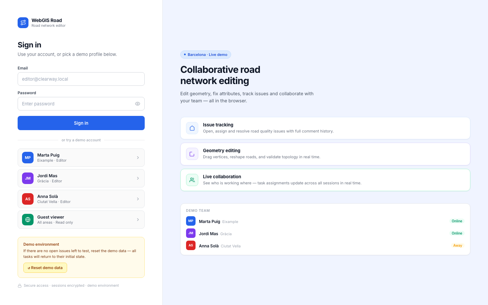
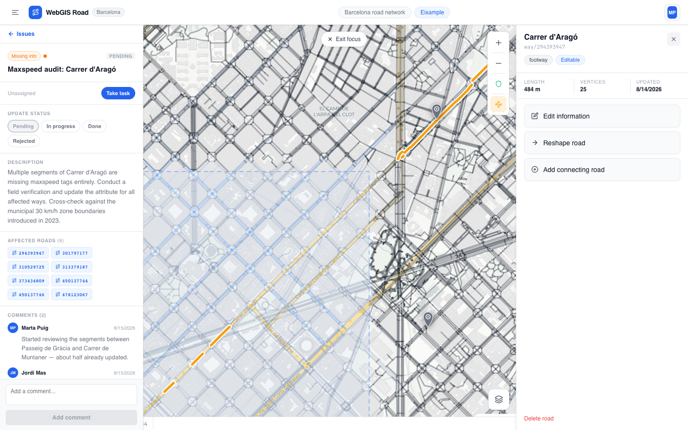
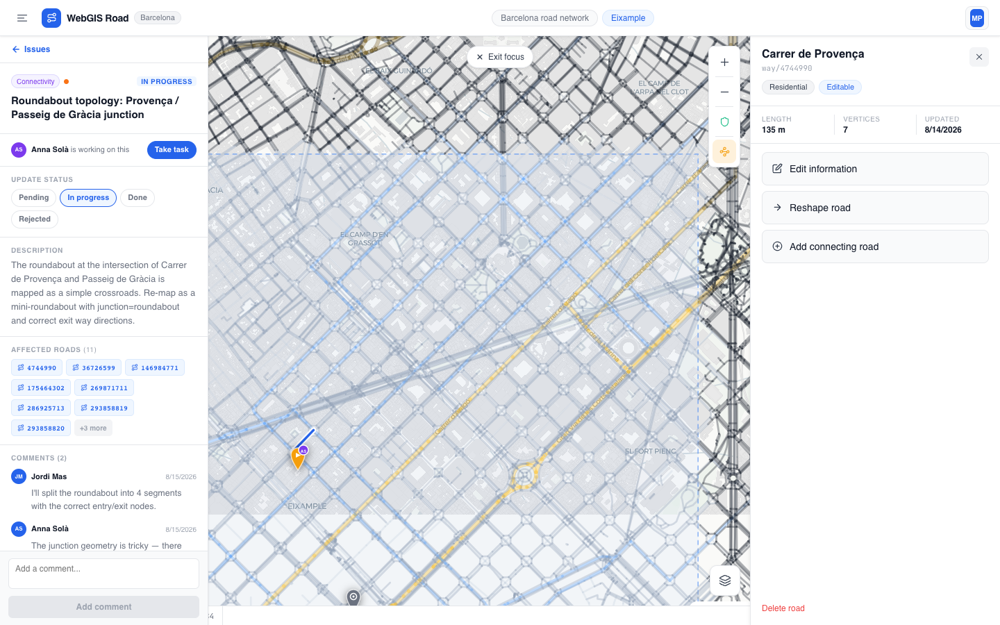
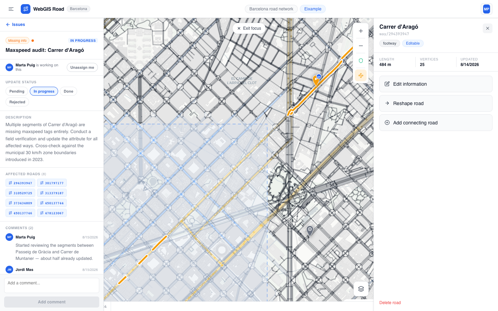
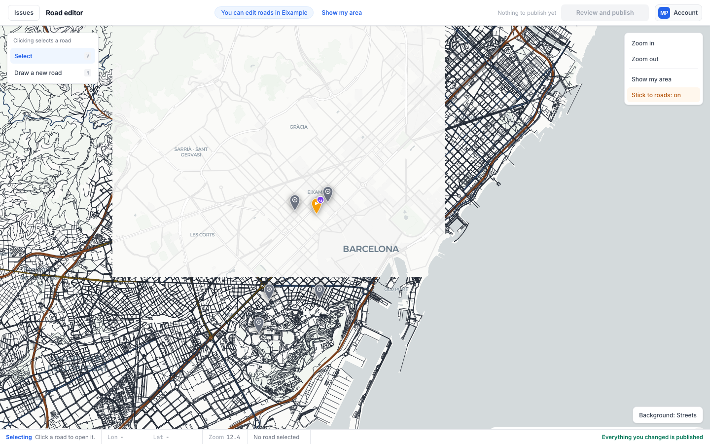

Browser-based multi-user road quality tracker and geometry editor. Three editors share a live PostGIS road network, claim tasks with one click, and see each other's progress update on the map in real time.

Three field editors, each responsible for a neighbourhood in Barcelona, can log in, browse open tasks in the left panel, click a task to fly the map to the affected roads with an orange highlight overlay, and take ownership with one button. The map pin turns yellow with the assignee's initials and every other open session sees the update within 20 seconds.
On top of the task tracker sits a full geometry editor: drag vertices, insert midpoints, snap to nearby roads within 14 px, enter coordinates by lat/lng for precision work. All edits stage locally before a single publish call commits them to PostGIS and refreshes the tile cache.

Tasks move through four states: pending, in progress, done, rejected. Every transition writes to a task_activity audit table so the full history of each job (who created it, who picked it up, every comment and status change) is always visible in the Activity tab.


Open two windows simultaneously and take a task in one: the pin turns yellow in the other within 20 seconds. No WebSocket required. Switch accounts from the top-right menu without signing out first.

| Frontend | React 18 + Vite + TypeScript. MapLibre GL JS for all map rendering. CartoDB Positron basemap. |
| Map tiles | PostGIS ST_AsMVT served via FastAPI. Token-authenticated MVT endpoint, sub-80 ms at zoom 14. |
| Backend | FastAPI + SQLAlchemy async + asyncpg. Task lifecycle, road CRUD, geometry editing, demo reset endpoint. |
| Database | PostgreSQL 15 + PostGIS 3. GIST spatial index on road geometry. task_activity audit log. |
| Auth | JWT Bearer. Three editor accounts with per-neighbourhood area assignment. Public guest mode. |
| Deploy | Docker Compose on EC2. Caddy reverse proxy. Barcelona OSM data seeded at container start. |